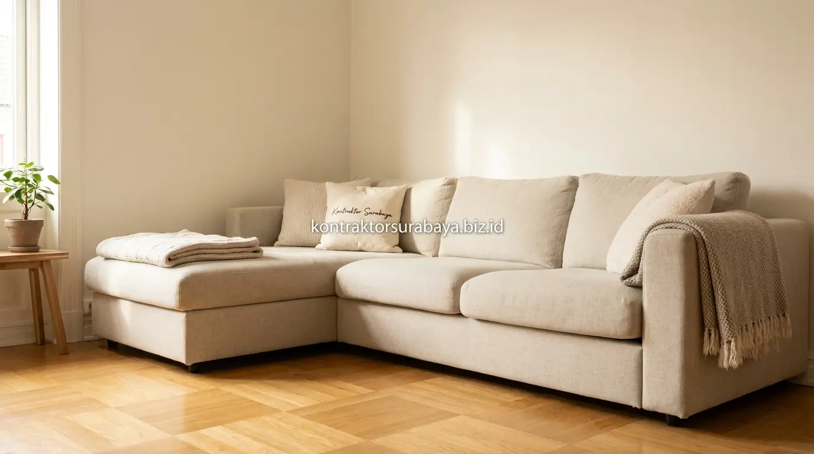

Ruang keluarga merupakan jantung interaksi setiap hunian—tempat anggota keluarga berkumpul, bersantai setelah beraktivitas, hingga menyambut kerabat dekat. Namun, pada kawasan perumahan perkotaan seperti di Rungkut, Mulyorejo, Sukolilo, hingga kawasan berkembang Surabaya Timur, keterbatasan luas kavling tanah sering kali menghasilkan ruang keluarga berukuran kompak (hanya sekitar 3x3 meter hingga 3x4 meter).
Banyak pemilik rumah mengeluhkan ruangan yang cepat terasa pengap, padat, dan sempit begitu sofa serta meja TV diletakkan. Padahal, dengan perencanaan tata letak yang presisi dari tim ahli jasa desain interior Surabaya, ruang keluarga berukuran terbatas tetap bisa disulap menjadi area santai yang lapang, elegan, dan estetik tanpa perlu menambah luas meter persegi bangunan.
1. Kenapa Ruang Keluarga Sempit Membutuhkan Strategi Penataan Khusus
Ruang keluarga dengan luas terbatas mudah terasa sesak apabila furnitur dan dekorasi ditempatkan tanpa perencanaan, sehingga strategi penataan yang tepat menjadi kunci agar ruangan tetap nyaman digunakan sehari-hari.
Banyak rumah di perumahan Surabaya Timur memiliki luas ruang keluarga yang terbatas akibat keterbatasan lahan kavling, sehingga setiap keputusan penataan, mulai dari pemilihan furnitur, tata sirkulasi udara, hingga warna dinding, perlu dipertimbangkan secara cermat agar ruangan tetap terasa lega meski ukurannya tidak berubah. Mengintegrasikan konsep interior sejak tahap rancang bangun bersama jasa arsitek rumah Surabaya mampu memaksimalkan bukaan jendela dan pencahayaan alami sejak dini.
2. Penempatan Sofa yang Efisien untuk Ruang Terbatas
Sofa berbentuk L di sudut ruangan, sofa modular, sofa tanpa lengan tinggi, dan menjaga jarak minimal sofa dari dinding adalah empat strategi penempatan sofa yang efisien untuk ruang keluarga terbatas:
- Sofa Berbentuk L di Sudut Ruangan (Corner Sectional): Memaksimalkan kapasitas duduk bagi 4–5 anggota keluarga tanpa memakan area lalu lintas di tengah ruangan, sehingga lantai tengah tetap lapang.
- Sofa Modular Fleksibel: Memberi fleksibilitas tinggi untuk diatur ulang sesuai kebutuhan, baik disusun memanjang untuk menonton TV bersama maupun dipisah saat menerima tamu dalam jumlah lebih banyak.
- Sofa Tanpa Lengan Tinggi (Low Profile / Armless): Memberi kesan visual yang lebih ringan dan tidak memblokir pandangan mata dibanding sofa bergaya klasik dengan bantalan tangan yang tebal dan bulky.
- Menjaga Jarak Minimal Sofa dari Dinding: Memberi jarak 5–10 cm dari dinding membantu sirkulasi udara tetap lancar serta memberi ilusi optik bahwa ruangan tidak padat terhimpit.

3. Skema Warna Dinding yang Membuat Ruangan Terasa Lebih Luas
Warna terang netral, satu warna aksen saja pada satu sisi dinding, menghindari warna gelap yang mendominasi, dan warna dinding yang senada dengan lantai adalah empat skema warna yang membantu ruang keluarga terasa lebih luas.
Warna terang netral seperti putih gading (off-white), krem hangat, atau light warm grey memiliki tingkat refleksi cahaya (LRV - Light Reflectance Value) tinggi yang memantulkan sinar matahari ke seluruh penjuru ruang. Jika ingin memberi sentuhan kemewahan, Anda dapat menambahkan aksen backdrop TV kisi-kisi kayu minimalis pada satu bidang dinding utama tanpa membuat ruangan terasa sempit.
4. Tabel Panduan Pemilihan Elemen Interior untuk Ruang Keluarga Kompak
Berikut panduan komparasi spesifikasi furnitur dan elemen visual untuk memaksimalkan ruangan sempit standar perumahan:
| Elemen Interior | Rekomendasi Terbaik | Hindari untuk Ruang Sempit | Manfaat Visual & Fungsional |
|---|---|---|---|
| Model Sofa | Sofa L Sudut / 2-Seater berkaki ramping tinggi | Sofa klasik ukir tebal, sandaran tangan lebar | Lantai bawah sofa terlihat, ruangan terasa melayang & lega. |
| Meja Kopi (Coffee Table) | Bentuk bulat / oval dengan rangka besi tipis | Meja kotak kayu solid masif tanpa rongga | Aman tanpa sudut tajam dan menghemat area sirkulasi jalan. |
| Penyimpanan TV | Credenza gantung dinding (Floating TV Console) | Lemari pajangan buffet besar menempel lantai | Bebas debu di lantai dan memaksimalkan ruang vertikal dinding. |
| Dekorasi Cermin | Cermin full-height frameless / arch mirror | Cermin kecil berbingkai ukiran tebal | Menggandakan pantulan cahaya dan ilusi kedalaman ruang ganda. |
5. Bagaimana Cermin Membantu Menciptakan Ilusi Ruang Lebih Besar?
Cermin berukuran besar yang ditempatkan pada salah satu dinding memantulkan cahaya dan pemandangan ruangan, menciptakan kesan kedalaman tambahan tanpa mengubah ukuran fisik ruang keluarga.
Penempatan cermin yang tepat, misalnya menghadap jendela atau pintu geser kaca taman belakang, dapat menggandakan intensitas pencahayaan alami di dalam ruangan. Efek pantulan ini mengaburkan batas dinding solid, membuat otak manusia mempersepsikan ruangan dua kali lebih luas dari ukuran aslinya.
6. Furnitur Multifungsi untuk Ruang Keluarga Berukuran Kecil
Meja lipat, ottoman dengan penyimpanan tersembunyi, rak dinding ambalan vertikal, dan coffee table dengan laci adalah empat furnitur multifungsi yang membantu menghemat ruang pada ruang keluarga berukuran kecil:
- Meja Lipat Dinding (Wall-mounted Drop-leaf): Dapat dilipat rata dengan dinding saat tidak digunakan, memberi ruang gerak ekstra untuk aktivitas anak atau berolahraga.
- Ottoman dengan Storage Tersembunyi: Berfungsi ganda sebagai tempat duduk tambahan, sandaran kaki santai, sekaligus wadah menyimpan mainan anak atau selimut.
- Rak Dinding Vertikal (Floating Shelves): Memanfaatkan dinding atas yang sering kosong tanpa memakan luas lantai produktif.
- Coffee Table dengan Rak Bawah / Laci: Menyimpan majalah, remote control, dan kabel charger agar permukaan meja selalu bersih dan rapi (decluttered).
7. Pengaturan Pencahayaan agar Ruang Keluarga Tidak Terasa Sempit
Kombinasi pencahayaan dari beberapa titik lampu berukuran kecil (layered lighting) umumnya memberi kesan ruangan jauh lebih luas dibanding hanya mengandalkan satu lampu gantung besar di tengah plafon.
Sesuai prinsip lighting design interior modern, terapkan kombinasi:
- Ambient Lighting: Lampu downlight recessed LED 3000K (warm white) tersembunyi di plafon gypsum yang menerangi ruangan secara merata.
- Indirect Cove Lighting: Strip LED tersembunyi di balik drop ceiling atau panel backdrop TV yang memberikan bias cahaya lembut tanpa menyilaukan mata.
- Accent Lamp: Standing lamp ramping di sudut ruangan yang memandu arah pandang ke sudut terjauh ruangan.
8. Kesalahan yang Membuat Ruang Keluarga Sempit Terasa Makin Sesak
Hindari beberapa kesalahan umum yang sering terjadi saat mendekorasi ruang keluarga kecil:
- Furnitur Berukuran Terlalu Besar (Over-scale): Membeli sofa 3-seater raksasa yang memakan 60% luas lantai ruangan sehingga menyisakan celah jalan sempit.
- Terlalu Banyak Pajangan dan Pernik Kecil: Memenuhi rak dengan puluhan pigura foto atau suvenir yang memicu polusi visual (clutter).
- Menggantung Tirai Terlalu Rendah: Memasang rel gorden tepat di atas kusen jendela membuat plafon terlihat rendah. Pasang rel gorden setinggi mungkin mendekati plafon untuk ilusi vertikal yang tinggi.
- Menutup Jalur Sirkulasi Menuju Dapur / Taman: Menaruh meja atau kursi santai yang menghalangi akses jalan utama penghuni rumah.
"Kunci interior ruang sempit bukan terletak pada seberapa banyak barang yang bisa dimasukkan, melainkan seberapa cerdas kita menciptakan ruang kosong dan sirkulasi visual yang mengalir bebas." — Erlang Sinatrya, Lead Project Engineer Kontraktor Surabaya
Setiap ruang keluarga memiliki dimensi, arah pencahayaan matahari, dan kebutuhan unik. Konsultasikan penataan interior rumah Anda bersama tim jasa desain interior custom Kontraktor Surabaya atau pelajari integrasi renovasinya pada halaman jasa renovasi bangunan. Anda juga dapat melihat hasil karya kami di halaman galeri portofolio proyek.